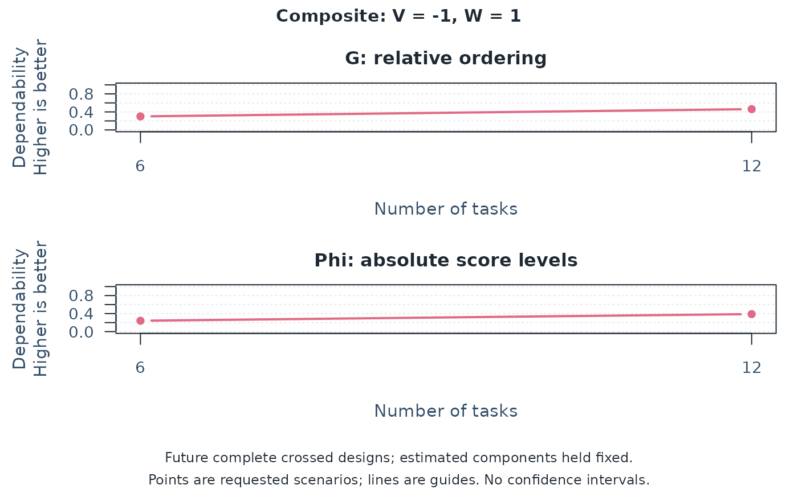
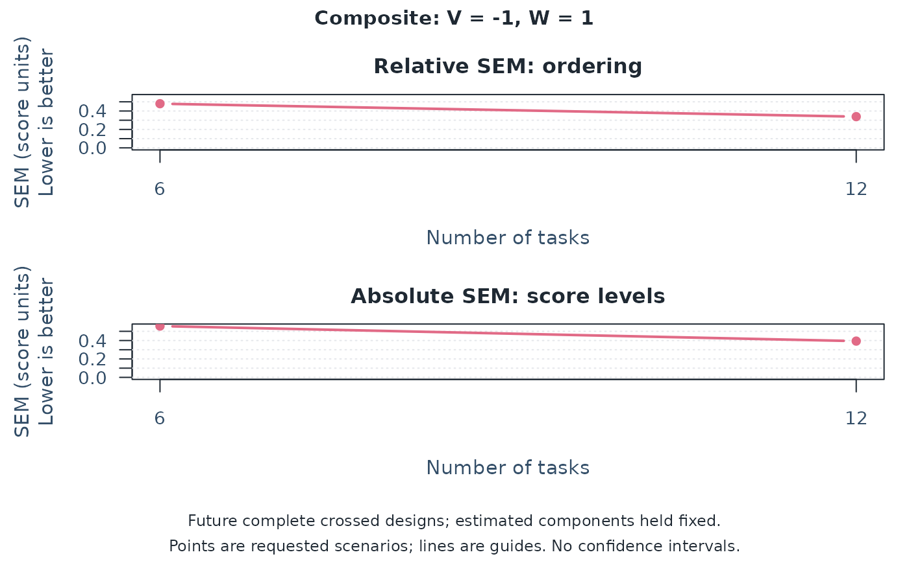
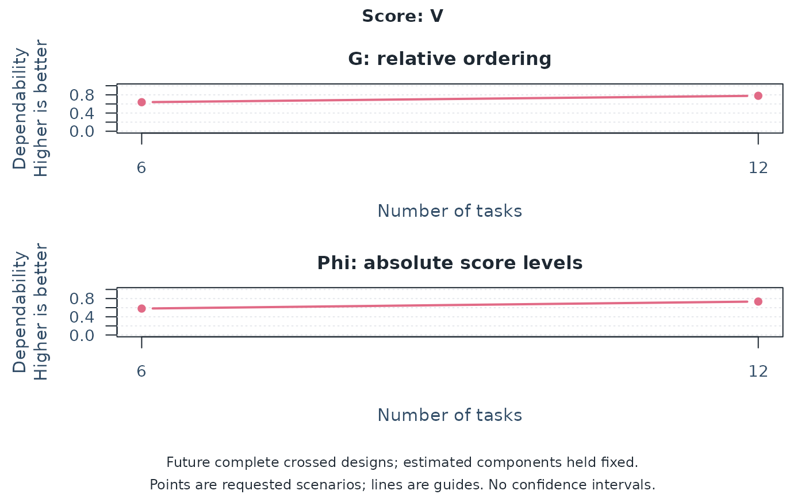
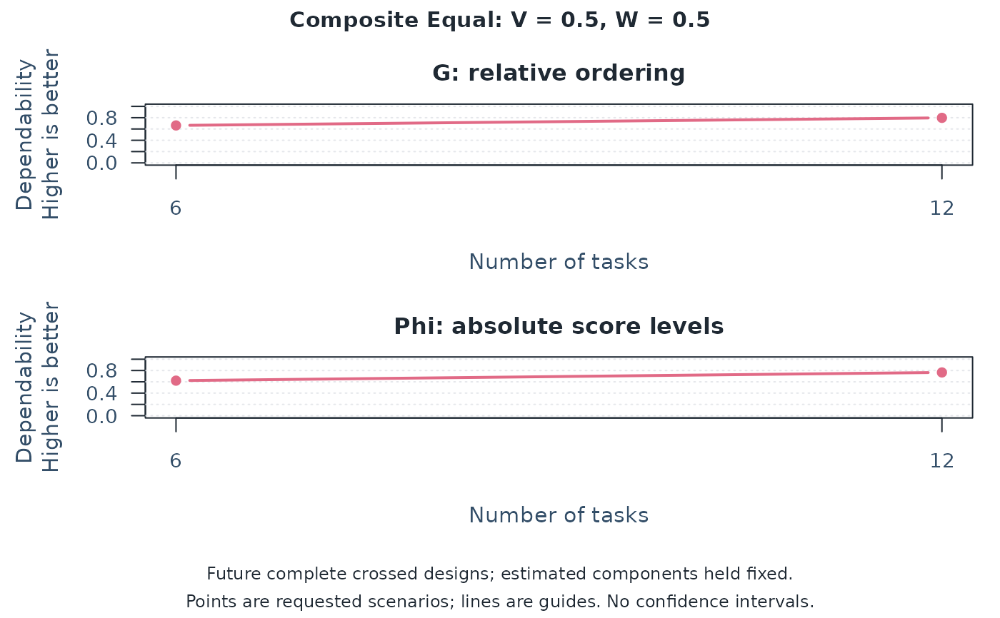
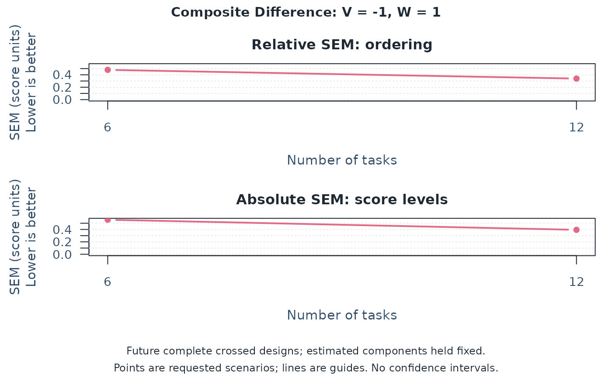

Plan measurement conditions with a multivariate D-study
Source:R/api-multivariate-gtheory.R
mfrm_multivariate_d_study.RdWould adding tasks or raters make assessment scores more dependable? Use an estimated G-study to compare specified future designs for individual score components and optional weighted composites. Each scenario reports dependability and measurement error for mean scores over common random measurement conditions, such as tasks, raters, or occasions. No model is refitted.
Arguments
- x
A result from
mfrm_multivariate_gstudy().- design_grid
A nonempty data frame with one positive integer count column per G-study facet. With the
rater/taskinterface, useRatersand/orTasksfor the included facets. Withfacets, use its exact labels, for exampleRaterandOccasionforfacets = c(Rater = "Assessor", Occasion = "Session"). The mapping is available inx$design$count_columns. Each row is one future complete balanced design preserving the G-study's crossed or nested structure. Fornesting = c(Rater = "Task"),Ratersmeans raters per task, not the total rater pool.NULLuses the G-study counts (children per parent for a nested facet) only when its retained data are complete and balanced; incomplete or unequal designs require an explicit grid. Counts need not match or exceed the G-study counts. Conditions are shared across persons and scores in every scenario.- weights
Optional named numeric vector for one composite, or a numeric matrix for several named composites. A vector must name every original score exactly once; matrix rows must name every score exactly once, and columns must have unique, nonempty composite names. Rows are matched by name, regardless of order. Every weight must be finite and each composite must have at least one nonzero weight. Signed weights allow difference scores, for example
c(Content = 1, Organization = -1). Weights are used as supplied, without normalization.NULLreports original scores only. Otherwise, each scenario reports the original scores once, followed by each composite. A vector's composite is named"Composite"; a matrix preserves its column names and order.- ...
Reserved for method compatibility.
- object
A result from
mfrm_multivariate_d_study().
Value
An mfrm_multivariate_d_study list containing coefficients
(scenario, counts of included facets, score/composite identity, raw
universe/relative/absolute variances, G/Phi, relative/absolute SEM, and
row and metric-specific status, and ComponentPSD), covariances
(three matrices per scenario), design_grid,
weights (the supplied vector or matrix, reordered to the G-study score
order), component_diagnostics,
and gstudy (the source result). summary() returns coefficients.
Details
Start with a concrete comparison, such as six versus twelve tasks
for every examinee. Each row of design_grid is one scenario. With both
facets, data.frame(Raters = c(2, 4), Tasks = c(3, 3)) compares two versus
four raters at three tasks; expand.grid(Raters = c(2, 4), Tasks = c(3, 6)) requests all four combinations. These counts apply to
every person and score, not to the total number of observed ratings.
For facets = c(Rater = "Assessor", Occasion = "Session"), use
expand.grid(Rater = c(1, 2), Occasion = c(2, 4)). The same workflow
applies to any supported one- or two-facet model; extra columns cannot
introduce conditions absent from the G-study.
Read summary(d) together with plot(d):
Gconcerns consistency of relative ordering, such as ranking examinees.Phiconcerns absolute score levels and also counts shifts from easier tasks or more lenient raters as error. It is not pass/fail accuracy.RelativeSEMandAbsoluteSEMexpress these errors in the units of the mean score or composite. Smaller SEMs mean less error. They are not confidence intervals for G or Phi.
Larger G/Phi and smaller SEM indicate greater dependability under the
model. There is no universally acceptable coefficient: consider the use
of scores, consequences of error, and workload before choosing a design.
Compare a chosen score/composite and metric across feasible plans. For
example, data.frame(Raters = c(2, 3, 4), Tasks = c(6, 4, 3)) holds the
number of ratings per person at twelve. It does not hold examinee task
burden or total cost constant. The largest projected coefficient is a
point-estimate ranking, not evidence that one plan is reliably better.
Consider the size of the projected difference and which differences
would matter for the assessment. Small rank changes need not imply large
practical losses. If a metric is unavailable for any candidate, comparing
only the remaining values does not resolve the full planning question.
plot(d, type = "sem") shows the SEMs. Plots select a sole composite
by default, or the first score when there are no composites. With several
composites, specify one with plot(d, composite = "Equal"); use
plot(d, score = "V") to inspect an original score named V. The title
always identifies the plotted score and any composite weights.
Check GStatus, PhiStatus, RelativeSEMStatus, and AbsoluteSEMStatus:
each explains the corresponding metric's availability. NA means
unavailable, not zero dependability. ComponentPSD separately flags
covariance components needing review. See plot.mfrm_multivariate_d_study() for
interpreting curves and unavailable estimates.
Calculation and interpretation limits
For crossed covariance component matrices P, R, T, PR, PT, RT,
and E, universe-score covariance is P. Relative-error covariance is
PR/n_r + PT/n_t + E/(n_r*n_t). Absolute-error covariance adds
R/n_r + T/n_t + RT/(n_r*n_t). The G-study number of persons does not
divide individual-score universe variance. Holding a count constant does
not turn its random facet into a fixed facet.
For a Person-by-Task G-study, E combines Person-by-Task interaction and
within-cell error: relative-error covariance is E/n_t, absolute-error
covariance is (T + E)/n_t, and universe-score covariance remains P.
The same formulas apply to a Person-by-Rater design or to facets selected
by facets, with names replaced in the declared order. For a single
facet F and its planned count n, relative error is E/n and absolute
error is (F + E)/n. A D-study cannot introduce an absent facet.
For fixed tasks represented by score columns in a Person-by-Rater model,
vary only Raters. The task set remains fixed, and each planned rater
scores all tasks. See "Fixed tasks as score components" in
mfrm_multivariate_gstudy() for the target and allocation requirements.
For raters nested within tasks, use the five components P, T,
R(T), PT, and E, where E includes the Person-by-Rater-within-Task
interaction. With n_r raters per task and n_t tasks, relative error is
PT/n_t + E/(n_r*n_t); absolute error adds T/n_t + R(T)/(n_r*n_t).
Universe covariance remains P. Other nested facet labels follow the
same rules. All persons receive the same tasks and their nested raters;
two raters per task at six tasks means twelve distinct raters, not two
raters each judging six tasks. Future unequal child counts, changes of
nesting, and nested-design sampling intervals are not supported.
For incomplete source data, counts of distinct observed levels are not per-person replication counts. This function projects a future complete design; it does not estimate the reliability of the observed sparse roster, heterogeneous person-specific assignments, or averages of them.
Each score uses diagonal entries; a composite uses w' Sigma w for each
of the three covariance matrices. Thus between-score covariance affects
composite dependability. G = UniverseVariance / (UniverseVariance + RelativeErrorVariance) and Phi uses absolute error instead. SEMs are
square roots of the corresponding error variances, in the units of the
score or specified composite of mean scores. Multiplying all weights by
a nonzero constant multiplies SEMs by its absolute value but leaves G/Phi
unchanged. Weights express a substantive choice; this function neither
chooses them nor identifies an optimal design. Interpret a difference
only when subtraction is meaningful on the supplied score scales.
Comparing several composites holds the estimated components and planned
designs constant, but different weights may change the construct being
assessed. A higher coefficient alone does not justify that change.
Compare SEMs across composites only when their scales are comparable.
The same weights define the universe-score composite and its observed
mean-score estimate (the equal WWTS/AWTS case in mGENOVA). Different
target and estimation weights, profile reliability, and accuracy at a
cut score are not provided. Unlike mGENOVA's default D-study procedure,
negative variance estimates are not replaced with zero. mGENOVA replaces
negative variance components with zero for the D-study unless its
NEGATIVE option is selected (manual, pages 15 and 21). That rule concerns
variances, not all negative covariances, and does not guarantee PSD
component matrices.
Do not transfer that option's meaning to jGENOVA: its NEGATIVE option
controls printing of negative estimates. jGENOVA's D-study zeroes negative
variances with either ALGORITHM or its default EMS convention; EMS
also recalculates other components using the zero replacements. Matching
a raw G-study estimate therefore need not give matching default D-studies.
These conventions are not selectable estimation options in this function.
Raw covariance matrices and projected variances remain available. G
requires nonnegative universe and relative-error variances and a positive
sum; Phi uses absolute-error variance instead. Each SEM requires only its
corresponding nonnegative error variance. A failed requirement makes
only that metric NA. Zero universe variance yields a coefficient of
zero when its error variance is positive; a zero total variance leaves
the coefficient undefined. No estimates are clipped or replaced.
Status summarizes a row as "Available", "Partially available", or
"Unavailable"; the four metric-specific status columns give the reasons.
ComponentPSD is TRUE only when all G-study component matrices pass
their numerical PSD check. A FALSE value flags components for review
without suppressing otherwise calculable projections. Print and plot
methods display a note for non-PSD components. Calculability does not
validate the joint covariance model or establish precise estimation;
inspect component_diagnostics before interpreting estimates. Raw estimates
can yield Phi > G when projected absolute error is less than relative
error. Under the stated model, the extra absolute-error contributions
are nonnegative; such a reversal calls for review of the estimated
components, not a conclusion that absolute decisions are more dependable.
Passing the matrix checks does not establish model fit. Outputs are
point projections conditional on the estimated components, without
confidence intervals, missing-data correction, or MFRM latent inference.
References
Brennan, R. L. (2001). Generalizability theory. Springer. Chapters 9–11. Brennan, R. L. (2001). Manual for mGENOVA, Version 2.1. Iowa Testing Programs Occasional Papers, No. 50. Pages 16 and 20–22; Appendices E and F, pages 74–81. Crick, J. E., and Brennan, R. L. (2021). Manual for jGENOVA, Version 1.0. Pages 2-10–2-11, 3-5, and A-22–A-23.
Examples
# Published synthetic two-score data: the same six tasks for ten persons.
tasks <- read.csv(system.file("extdata", "mgenova-table12.csv", package = "mfrmr"))
g <- mfrm_multivariate_gstudy(tasks, c("V", "W"), rater = NULL)
# Question: would doubling tasks improve the dependability of W minus V?
d <- mfrm_multivariate_d_study(g, data.frame(Tasks = c(6, 12)),
weights = c(V = -1, W = 1))
summary(d)
#> Scenario Tasks Kind Score UniverseVariance RelativeErrorVariance
#> 1 1 6 Score V 0.36814815 0.2087037
#> 2 1 6 Score W 0.36888889 0.2561111
#> 3 1 6 Composite Composite 0.09851852 0.2298765
#> 4 2 12 Score V 0.36814815 0.1043519
#> 5 2 12 Score W 0.36888889 0.1280556
#> 6 2 12 Composite Composite 0.09851852 0.1149383
#> AbsoluteErrorVariance G Phi RelativeSEM AbsoluteSEM Status
#> 1 0.2661111 0.6382022 0.5804380 0.4568410 0.5158596 Available
#> 2 0.3094444 0.5902222 0.5438165 0.5060742 0.5562773 Available
#> 3 0.3100000 0.3000000 0.2411605 0.4794544 0.5567764 Available
#> 4 0.1330556 0.7791495 0.7345280 0.3230354 0.3647678 Available
#> 5 0.1547222 0.7423141 0.7045093 0.3578485 0.3933475 Available
#> 6 0.1550000 0.4615385 0.3886048 0.3390255 0.3937004 Available
#> GStatus PhiStatus RelativeSEMStatus AbsoluteSEMStatus ComponentPSD
#> 1 Available Available Available Available TRUE
#> 2 Available Available Available Available TRUE
#> 3 Available Available Available Available TRUE
#> 4 Available Available Available Available TRUE
#> 5 Available Available Available Available TRUE
#> 6 Available Available Available Available TRUE
plot(d)

plot(d, type = "sem")

# G rises from 0.300 to 0.462, conditional on these estimated components.
# This is a planning projection, not evidence from twelve observed tasks.
# Without weights, report the original scores without creating a composite.
individual <- mfrm_multivariate_d_study(g, data.frame(Tasks = c(6, 12)))
plot(individual, score = "V")

# Compare weight choices on the same task-count scenarios.
weights <- cbind(Equal = c(V = 0.5, W = 0.5),
W_focus = c(V = 0.2, W = 0.8), Difference = c(V = -1, W = 1))
alternatives <- mfrm_multivariate_d_study(g,
data.frame(Tasks = c(6, 12)), weights = weights)
summary(alternatives) # Original scores plus all three named composites.
#> Scenario Tasks Kind Score UniverseVariance RelativeErrorVariance
#> 1 1 6 Score V 0.36814815 0.20870370
#> 2 1 6 Score W 0.36888889 0.25611111
#> 3 1 6 Composite Equal 0.34388889 0.17493827
#> 4 1 6 Composite W_focus 0.35297778 0.20984938
#> 5 1 6 Composite Difference 0.09851852 0.22987654
#> 6 2 12 Score V 0.36814815 0.10435185
#> 7 2 12 Score W 0.36888889 0.12805556
#> 8 2 12 Composite Equal 0.34388889 0.08746914
#> 9 2 12 Composite W_focus 0.35297778 0.10492469
#> 10 2 12 Composite Difference 0.09851852 0.11493827
#> AbsoluteErrorVariance G Phi RelativeSEM AbsoluteSEM Status
#> 1 0.2661111 0.6382022 0.5804380 0.4568410 0.5158596 Available
#> 2 0.3094444 0.5902222 0.5438165 0.5060742 0.5562773 Available
#> 3 0.2102778 0.6628198 0.6205514 0.4182562 0.4585605 Available
#> 4 0.2511778 0.6271513 0.5842498 0.4580932 0.5011764 Available
#> 5 0.3100000 0.3000000 0.2411605 0.4794544 0.5567764 Available
#> 6 0.1330556 0.7791495 0.7345280 0.3230354 0.3647678 Available
#> 7 0.1547222 0.7423141 0.7045093 0.3578485 0.3933475 Available
#> 8 0.1051389 0.7972238 0.7658521 0.2957518 0.3242513 Available
#> 9 0.1255889 0.7708580 0.7375728 0.3239208 0.3543852 Available
#> 10 0.1550000 0.4615385 0.3886048 0.3390255 0.3937004 Available
#> GStatus PhiStatus RelativeSEMStatus AbsoluteSEMStatus ComponentPSD
#> 1 Available Available Available Available TRUE
#> 2 Available Available Available Available TRUE
#> 3 Available Available Available Available TRUE
#> 4 Available Available Available Available TRUE
#> 5 Available Available Available Available TRUE
#> 6 Available Available Available Available TRUE
#> 7 Available Available Available Available TRUE
#> 8 Available Available Available Available TRUE
#> 9 Available Available Available Available TRUE
#> 10 Available Available Available Available TRUE
plot(alternatives, composite = "Equal")

plot(alternatives, composite = "Difference", type = "sem")

# Choose weights for the intended interpretation, not solely for higher G.